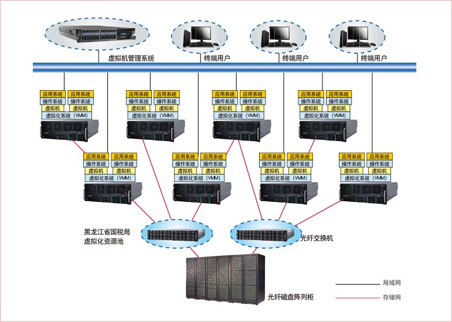

面临IT挑战与期望
黑龙江省国税信息中心面临着多项挑战和期望：
- 数据中心空间不足，运行维护人员短缺。
- 大量需要淘汰的服务器上运行的应用无法快速、不中断的迁移到新系统上。
- 一些部门需要快速提供独立的测试环境，IT部门很难实现。
- 数据中心能耗过高，电费开支庞大。
- 企业需要快速地实现系统硬件的升级和维护，需要快速地部署应用系统，为企业提供即时的服务。
- 全部在线系统需要双机热备，保证业务连续性；一些重要生产系统需要提供数据备份功能。
联想解决方案
针对用户遇到的挑战，联想推荐了税务虚拟化云计算解决方案。该方案基于联想41台联想R680 G7高端四路服务器，结合VMware虚拟化软件实现了60多种不同应用的虚拟化部署迁移。建立了一个自助管理的虚拟基础架构系统，将信息中心的软硬件资源汇集成一个高效的、可管理的资源池，以服务的形式提供计算。初步形成了一个私有的云计算中心。
方案的优势：
- 联想方案将信息中心的软硬件资源汇集成一个高效的、可管理的资源池，以服务的形式提供计算。例如当有部门需要搭建测试环境时，仅几分钟即可为其在资源池上开辟新的虚机，将以前数日搭建测试环境时间大大压缩。
- 方案提供的Converter P2V功能，可以方便的将物理机迁移到虚拟机上；由于迁移过程简单、迅速，仅在晚上维护时间，就可以实现 应用的迁移，基本不需要中断应用，实现了业务的连续性。
- 方案利用虚拟机的封装特性，部署新服务器和应用仅需要数分钟时间，为税务系统提供了高效的即时服务。
- 方案采用VMware HA对虚拟机之间进行双机热备，消除硬件的单点故障，保证业务的连续性；另，还提供了Data Recovery软件，能够做到虚拟机数据的全备份和增量备份，充分保障了业务数据的安全保存。

客户收益
联想为黑龙江省国税局提供了整体的虚拟化云计算解决方案，整合了现有硬件平台，60多个应用原来需要部署在1百多台服务器上，如今被整合在仅40余台服务器上，节省了50%空间及20%的硬件成本，为数据中心节省了60%的能耗。
系统提供了慧眼管理软件和Vcenter管理中心双重管理手段，使得用户可以轻松管理物理机和虚拟机。